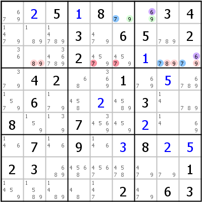

HoDoKu Solving Technique Index: Example for "ALS-XZ"

Original sudoku:
..5.8..34...3.65.2...2......42..1....6....3..8..7......7.9..8..23......1.....2.63
Use the following line if you want to load the sudoku in HoDoKu:
:9001:7:.+25+18..34...3.65.2...2..+1...42..1.+5..6..+2.3..8..7..+2...7.9.+38+2+523......1.....2.63:717 431 731 931 839 758 858 958 968 483 488 594 595:735 736:
The following representation can be pasted in most Sudoku programs:
.--------------------.-------------------.----------------. | 679 2 5 | 1 8 79 | 69 3 4 | | 1479 189 14789 | 3 479 6 | 5 789 2 | | 36 89 346789 | 2 4579 4579 | 1 789 679 | :--------------------+-------------------+----------------: | 379 4 2 | 68 369 1 | 679 5 6789 | | 1579 6 179 | 458 2 4589 | 3 14 789 | | 8 159 139 | 7 34569 459 | 2 14 69 | :--------------------+-------------------+----------------: | 146 7 146 | 9 146 3 | 8 2 5 | | 2 3 689 | 4568 4567 4578 | 479 79 1 | | 1459 1589 1489 | 48 147 2 | 479 6 3 | '--------------------'-------------------'----------------'
Representation of the step:
.---------------------.---------------------.-------------------.
| 679 2 5 | 1 8 A79 | A69 3 4 |
| 1479 189 14789 | 3 479 6 | 5 789 2 |
| 36 B89 346789 | 2 45-79 45-79 | 1 B789 B679 |
:---------------------+---------------------+-------------------:
| 379 4 2 | 68 369 1 | 679 5 6789 |
| 1579 6 179 | 458 2 4589 | 3 14 789 |
| 8 159 139 | 7 34569 459 | 2 14 69 |
:---------------------+---------------------+-------------------:
| 146 7 146 | 9 146 3 | 8 2 5 |
| 2 3 689 | 4568 4567 4578 | 479 79 1 |
| 1459 1589 1489 | 48 147 2 | 479 6 3 |
'---------------------'---------------------'-------------------'
Almost Locked Set XZ-Rule: A=r1c67 {679}, B=r3c289 {6789}, X=6, Z=7 => r3c56<>7
Copyright © 2008-12 by Bernhard Hobiger
Last modified on May 5, 2025 by shorty#3746
(based of the 1to9only Github repo)
All material on this page is licensed under the GNU FDLv1.3.